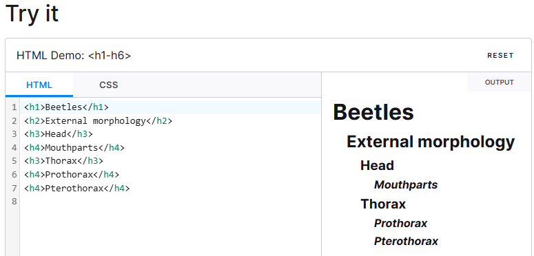
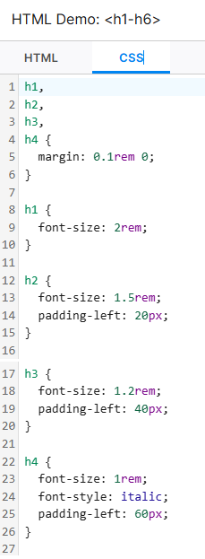

<h1>–<h6>: The HTML Section Heading elements
The <h1> to
<h6>
HTML elements represent six levels of
section headings. <h1> is the highest section level
and <h6> is the lowest. By default, all heading
elements create a
block-level box
in the layout, starting on a new line and taking up the full width
available in their containing block.
Try it
 Attributes
These elements only include the global attributes.
Usage notes
- Heading information can be used by user agents to construct a table of contents for a document automatically.
-
Do not use heading elements to resize text. Instead, use the
CSS
font-sizeproperty. -
Do not skip heading levels: always start from
<h1>, followed by<h2>and so on.
Avoid using multiple <h1> elements on one page
While using multiple <h1> elements on one page is
allowed by the HTML standard (as long as they are not
nested), this is not considered a best practice.
A page should generally have a single <h1> element
that describes the content of the page (similar to the document's
<title>
element).
While using multiple <h1> elements on one page is
allowed by the HTML standard (as long as they are not
nested), this is not considered a best practice.
A page should generally have a single <h1> element
that describes the content of the page (similar to the document's
<title>
element).
Prefer using only one <h1> per page and
nest headings without skipping levels.
Specifying a uniform font size for
Before May 2025, the
HTML standard
specified that <h1> elements in a
<section>, <article>,
<aside>, or <nav> element should
render as an <h2> (smaller
font-size with
an adjusted
margin-block), or as an <h3> if nested another level, and so on.
This special context-dependent default style has now been
removed.
To ensure consistent <h1> rendering for browsers that
implement the old context-dependent default style, use the following
style rule: